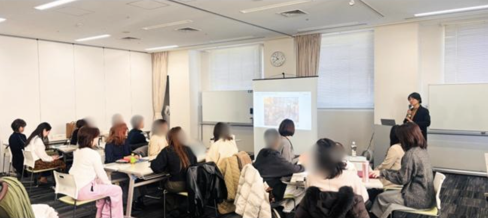
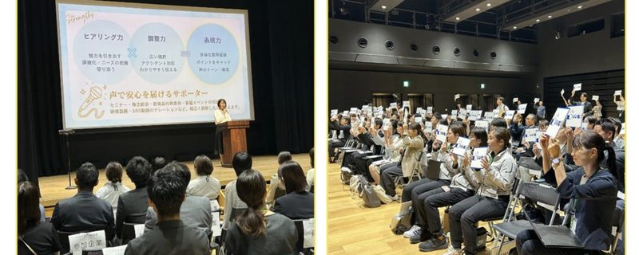

キャリアは、何度でも描き直せる。
キャリア・リデザイン福岡
自己理解から就業、その先の成長まで。切れ目のない伴走で、あなたのキャリアチャレンジを全力応援します。
キャリア・リデザイン・スパイラルとは
女性のキャリアを一度きりの選択ではなく、ライフステージに応じて再設計（リデザイン）しながら、段階的に成長していく「螺旋上昇型のキャリア形成」と捉える考え方です。学びから就業、そして就業後の定着まで、切れ目のない伴走プログラムで一貫してサポートします。
こんな方におすすめ
非正規雇用から正社員・キャリアアップを目指したい方
出産・育児でキャリアが中断し、再スタートを考えている方
今の仕事に悩みがあり、働き方を見直したい方
キャリアアップしたいが、何から始めればいいかわからない方
プログラムの流れ
自己分析セミナー「わたしブランディング講座」
（リアル・オンデマンド：6/16(火)10:30-12:00）
自己理解を深化させ、自分の強みや価値観を言語化。キャリアの方向性を見つけます。

キャリアコンシェルジュとの個別面談（6月）
専任のキャリアコンシェルジュが一人ひとりの強みを引き出し、キャリアプランを一緒に設計します。
「ママと女性のドラフト会議」で企業と出会う
（7/6(月)10:30〜13:00）
従来の就活とは異なる「ドラフト方式」で、あなたのスキルと経験に関心を持つ企業と直接対話します。

マッチング・企業への応募
希望の就労条件で企業とマッチング。キャリアコンシェルジュが応募をサポートします。
Rebloomプログラムによる就業後フォロー
就業後もワークショップや個別コーチング、上長向け個別面談を通じて、安心して働き続けられる環境をサポートします。
- 実践スキル習得ワークショップ（計4回）
タイムマネジメント・シェアドリーダーシップ・ロジカルシンキング・プロアクティブ行動 - 個別コーチング（50分×2回）
- 上長向け個別面談（2回）
キャリア・リデザイン・スパイラル コミュニティ
キャリアデザインやAI、SNSなどのオンライン講座や、先輩女性によるキャリアトーク開催、SNS発信などを行なっています。
キャリアリデザイン・ドラフト会議とは
女性のスピーチ
代表者2〜3名がステージでキャリアプレゼンテーションを行います。
企業と参加者の交流
ワールドカフェ形式で10分×8セッションの対話を行います。
フリー交流タイム
気になった企業と自由に交流。より深い対話ができます。
通常のマッチングとの違い
一般的なマッチング
- 企業が条件提示
- 条件合致者のみ応募
- ミスマッチが発生しやすい
ドラフト方式
- 個人がスキル・経験を発信
- 企業が関心を持ちアプローチ
- 対話と相互理解で成立
タイムスケジュール例
参加女性のキャリアチェンジ実績
講師紹介
田中 彩
NPO法人ママワーク研究所 理事長
自身の産後の社会復帰の挫折経験から、2012年にNPO法人ママワーク研究所を設立。2017年にWork Step株式会社を設立し、ママドラフト会議等の事業を展開。働く女性のキャリア支援に10年以上取り組む。社会保険労務士。
よくある質問
はい。キャリアの方向性を整理する段階からサポートします。まずはお気軽に説明会にご参加ください。
参加無料です。福岡県の事業として運営しているため、すべてのプログラムを無料でご利用いただけます。
もちろんです。オンライン対応の講座やセミナーも多く、夜間・休日の個別相談も可能です。お子さまの状況に合わせて柔軟に対応いたします。
IT企業、メーカー、サービス業など幅広い業種の企業が参加しています。在宅勤務や時短勤務に対応する企業も多数あります。
ブランクの長さは問いません。キャリアコンシェルジュが一人ひとりに合わせた支援を行います。ブランクを経て新たなキャリアを築いた方も多くいらっしゃいます。
説明会からの参加を推奨していますが、個別にご相談ください。状況に応じて柔軟に対応いたします。
会場（福岡市内）とオンラインのハイブリッド開催です。アーカイブ配信もありますので、当日参加が難しい方もご利用いただけます。
オンライン参加が可能なプログラムもありますので、お問い合わせください。